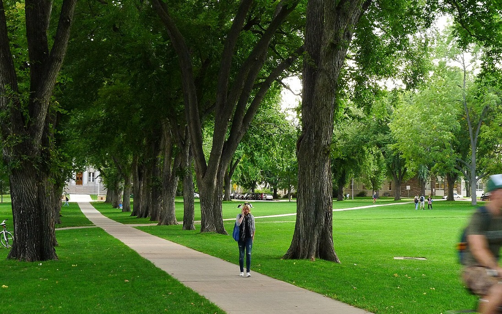
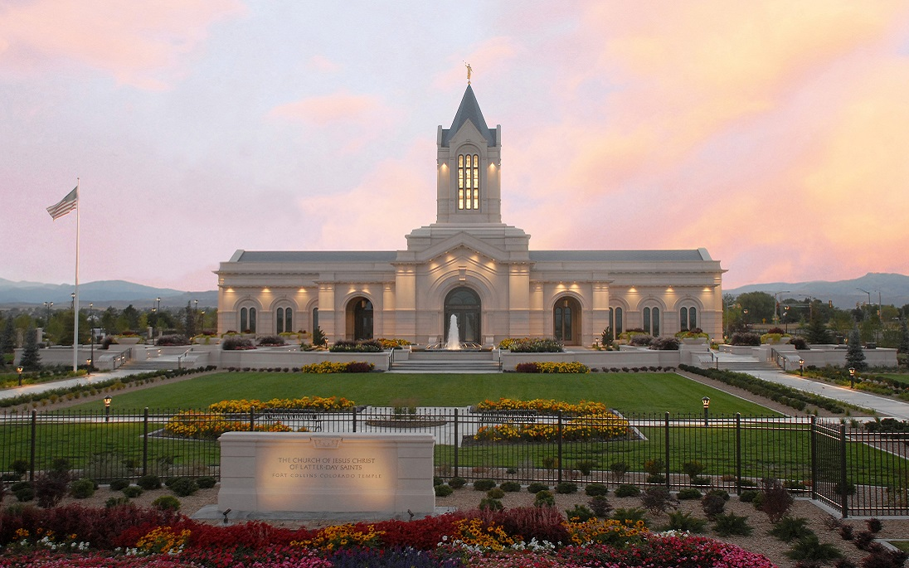

, the fourth-most populous city in Colorado, lies along the Cache la Poudre River near the foothills of the northern Front Range. The seat of Larimer County, Fort Collins was founded as an Army camp in 1864 and has since developed into a regional hub for education, business, culture, and recreation.
Learn more at the wiki!

Fort Collins, a vibrant city in northern Colorado, is home to approximately 170,376 residents as of 2023. It is located along the Front Range of the Rocky Mountains, the city boasts a picturesque setting with easy access to outdoor adventures. Originally established as a military outpost, Fort Collins was officially incorporated in 1883. It is widely recognized as a suburban city with a strong college town feel, thanks in large part to Colorado State University, which brings a youthful energy and innovation to the area.

Beyond its scenic beauty and academic influence, Fort Collins is a hub for craft brewing, arts, and outdoor recreation. Residents enjoy a blend of urban conveniences and small-town charm, with a historic downtown, lively music scene, and countless biking and hiking trails. The city’s median household income was $78,977 in 2022, slightly below Colorado’s statewide median of $92,470.